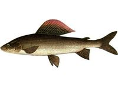

Харіус.


Характерною відмінною ознакою харіуса являється величезний спинний плавник. Тулуб його більш стислий, ніж у форелі і до черевних плавників покрито досить великою, щільною лускою, за виключенням грудей і черева, які покриті дрібними лусочками. За забарвленням харіус – одна з найкрасивіших риб. Зустрічаються сріблясті, коричневі, строкаті і навіть майже чорні. Спина харіуса – сіро-зелена, усіяна численними чорними цятками, боки тулуба – світло-сірі з поздовжніми, іноді малопомітними бурими смужками; черево – сріблясто-біле. Парні плавці – брудно-оранжеві, а непарні – фіолетові з темними смужками або цятками. Максимальна маса – 2,5 кг. У річках він рідко досягає маси понад 1 кілограма. По способу життя різні види харіуса майже не відрізняються. В озерах він мешкає на кам’янистих, іноді на піщаних відмілинах. Міграції Харіуса, пов’язані з пошуками корму і через зміну температури води. Харіуса не зустрінеш в глибоких берегових затоках. Він віддає перевагу прибійним берегам. Влітку річковий харіус тримається невеликими групами, в основному на перекатах і порогах, вибираючи місця з кам’янистим, гальковим дном. У дрібних річках воліє стояти у верхній частині виру, під бистриною або поблизу дна, піднімаючись на поверхню тільки за пропливаючою здобиччю. Восени він скочується на глибокі тихі плеса або в вири. В озерах і великих річках в період активності комах підходить до самої поверхні води. Під час полювання за комахами плескається, а іноді високо вистрибує з води. Озерний харіус після ікрометання скочується назад в озеро, зрідка затримуючись в річці до осені. Річковий ж спускається нижче за течією. Харчується харіус дрібними донними тваринами, комахами і їх личинками. Залежно від сезону і особливостей водойми ловлять Харіуса різними способами. Навесні і восени в невеликих річках харіуса ловлять з берега ходовим способом, на дощового хробака. У великих річках краще ловити з човна ходовою донкою. Харіус добре ловиться на короїда та черв’яка. Найкращий час клювання – полудень і вечірні сутінки. У річках харіус зазвичай краще бере на спінінгову приманку, що проходить поблизу дна. В озерах харіус попадається головним чином на кам’янистих мілинах – лудах – на глибині 1 -1,5 м, тому приманку ведуть у швидкому темпі у верхніх шарах води. Влітку харіус харчується в основному комахами, і в більшості водойм кращий результат дає ловля нахлистом. Взимку ловлять з льоду на тих же місцях, де харіус тримається літом, тобто на кам’янистих мілинах не глибше 2 м. Харіус не припиняє годуватися взимку. Але з початком нересту форелі харіус не бере приманок, харчуючись її ікрою. Взимку його ловлять на дрібні блешні і мормишку. Блешню краще використовувати вузьку, довжиною до 50 мм, одна сторона срібляста, інша – з червоної міді. Внутрішню сторону слід доводити до матового блиску. Краще підвісити двійник № 5-6 (оскільки з одинарного гачка часті сходи риби) і замаскувати його сірими пір’їнками, доцільно ще й наживити шматочком хробака.